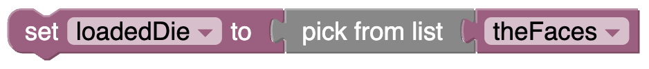

Simmer Guide
Loaded dice
So far, we have been rolling fair dice, that is, the probability of each number coming up is the same. What if we want to change that?
One way is to artificially give the die more faces. Instead of the set of faces being {1, 2, 3, 4, 5, 6}, we’ll make a die where the set is {1, 2, 3, 4, 5, 6, 6}.
This takes a little gruntwork in simmer; here is a picture of the code you need. See if you can figure out how it works:
Think about the consequences of this change and predict:
- If you roll this die 70 times, how many 4’s do you “expect?””
- How many 6’s?
- Sketch (on paper or in your head but don’t skip this!) the graph you might see if you just graphed
loadedDiein CODAP.
Now try it in the live example below; roll 70 loaded dice and graph the results:
To get the last block in the second line, “theFaces”, you first have to make the variable theFaces as you learned before.
Then pull an item block out of Variables and use the menu on it to change the name.
As we saw before, you probably didn’t get a very smooth graph, not too close to the “theoretical” distribution.
So keep sampling until you have 700 die rolls. Does that look more like the prediction?
Next steps
Think about what would happen of you rolled two loaded dice and added. What would the distribution of that sum look like? (Think first, predict, even make a diagram, then try it.)
If you had a die, and you didn’t know if it was loaded, how could you tell? This might be a job for inference!
You can use the Make list from text block for more than just loaded dice! Imagine what you could do with this code:
Start to imagine what kinds of things you can simulate. That code, for example, might be part of making a model of a fictitious student body.
Details about how this works
We made an intermediate attribute called theFaces. This is an Array, a list of the faces of our die. And we made it using a special, long block you found under Arrays and Lists.
This block, make list from text, has two arguments:
- a string containing the list itself, “1,2,3,4,5,6,6” and
- the delimiter, which is a comma (as a string, so it’s in quotes): “,”.
The delimiter is the character that separates list items. You could imagine using a dash or even a space as the delimiter…but you can use anything.
So theFaces is that whole list. Internally, it’s an Array; it looks like this: [1, 2, 3, 4, 5, 6, 6].
Then, in the next line, we set loadedDie using a pick from list block, which is in the middle of these three:

You found this block under Random, because its job is to pick a random item from the list you give it.
Then you emit the variables into CODAP, 70 times.